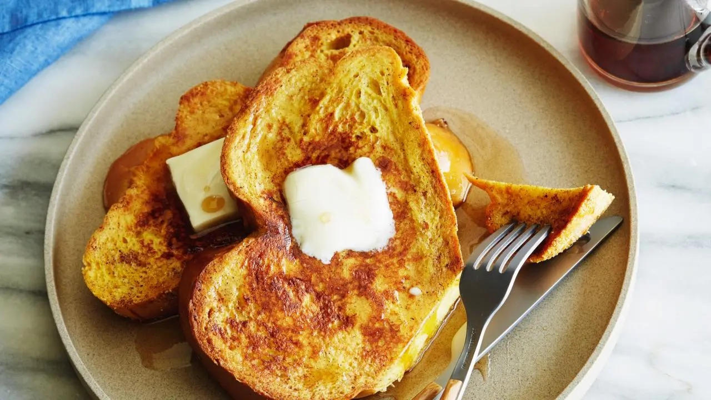

French Toast

French toast is bread soaked in a mixture of eggs and milk, then cooked until golden and delicious.
Ingredients
- 1 teaspoon ground cinnamon
- 1/4 teaspoon ground nutmeg
- 2 tablespoons sugar
- 4 tablespoons butter
- 4 eggs
- 1/4 cup milk
- 1/2 teaspoon vanilla extract
- 8 slices challah, brioche, or white bread
- 1/2 cup maple syrup, warmed
Steps
- In a small bowl, combine cinnamon, nutmeg, and sugar and set aside briefly.
- In a 10-inch or 12-inch skillet, melt butter over medium heat. Whisk together cinnamon mixture, eggs, milk, and vanilla and pour into a shallow container such as a pie plate. Dip bread in egg mixture. Fry slices until golden brown, then flip to cook the other side. Serve with syrup.
Home